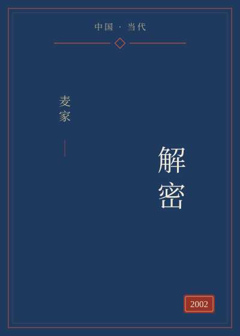
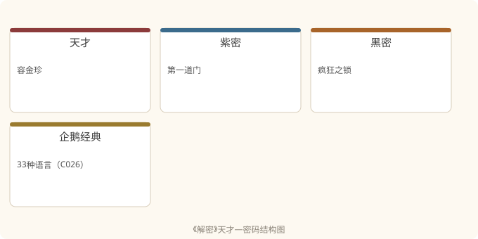

解密
一、基本信息
| 作者 | 麦家 |
|---|---|
| 成书/出版 | 出版年份待核（中国作家网 C026：'出版《解密》《暗算》《风声》《人生海海》等七部长篇小说'；'《解密》获第六届国家图书奖'） 麦家（中国作家网会员页）（官方文学机构） |
| 国别/地区 | 中国 |
| 时代 | 现当代 · 当代 |
| 体裁 | 长篇小说 |
| 语言 | 汉语（白话） |

《解密》天才—密码结构图（主题·结构图）
二、创作背景
中国作家网会员页（C026）：'《解密》获第六届国家图书奖'；'《解密》《暗算》入选英国企鹅经典文库'（中国当代小说仅两部）；'作品被译成33种语言'。
题材（通说待核）：数学天才容金珍与'701'破译密码紫密/黑密。
三、内容脉络
容金珍从《数学之神》？——不：从天资少年到破译专家——梦与密码（通说待核）。
破译紫密后的疯狂与黑密的失败（通说待核）。
四、主要人物表
| 人物 | 身份 | 说明 |
|---|---|---|
| 容金珍 | 破译天才 | 孤独的天才（通说待核） |
| 郑局长 | 701负责人 | （通说待核） |
五、主题与艺术特点
- 天才与体制（通说）。
- 密码的玄学化：梦的破译（通说待核）。
- 无名英雄的传记体（通说）。
六、影响与评论
- 中国作家网：'《解密》获第六届国家图书奖'；企鹅经典入选（C026）。
麦家（中国作家网会员页）（官方文学机构） - 中国作家网：'作品被译成33种语言'（C026）。
麦家（中国作家网会员页）（官方文学机构）
七、阅读建议
难点
- 数学与梦的隐喻。
- 保密单位的历史语境。
- 《解密》（中国青年出版社，通说待核）。
先《解密》→《暗算》→《风声》。
八、待核实
- 初版年份（2002年中国青年出版社说）核对。
- 容金珍人名与紫密/黑密细节核对。
- 英译 Decoded（2014，企鹅经典）核对。
本页主要来源
麦家的其他收录作品：暗算